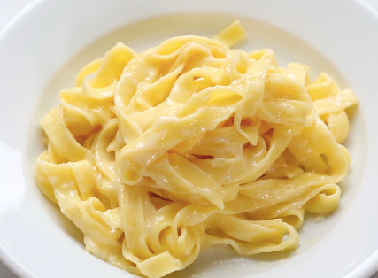

Buttered Noodles Recipe

Ingredients
- noodles
- butter
- salt & pepper
How to make
- Boil the noodles in a pot (with water) for 5 minutes. Then drain the water through a colander, and put the the noodles back into the pot.
- Add salt & pepper and one tablespoon of butter to the pan.
- Mix the ingredients